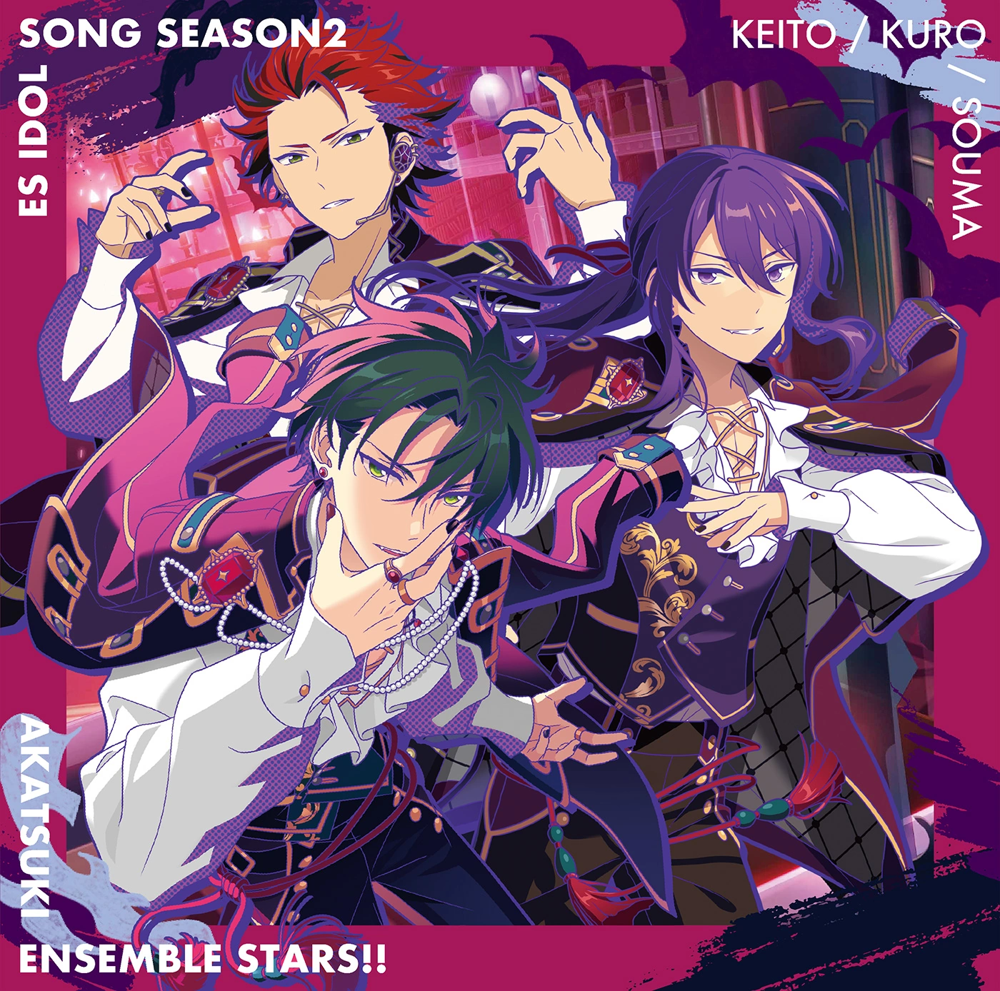
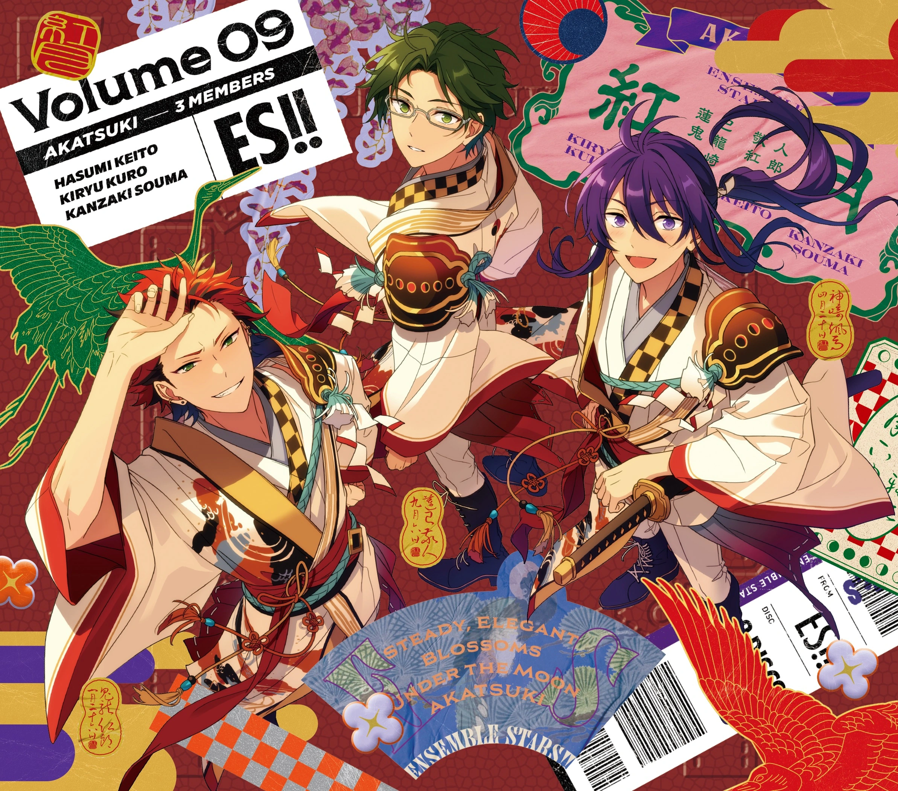
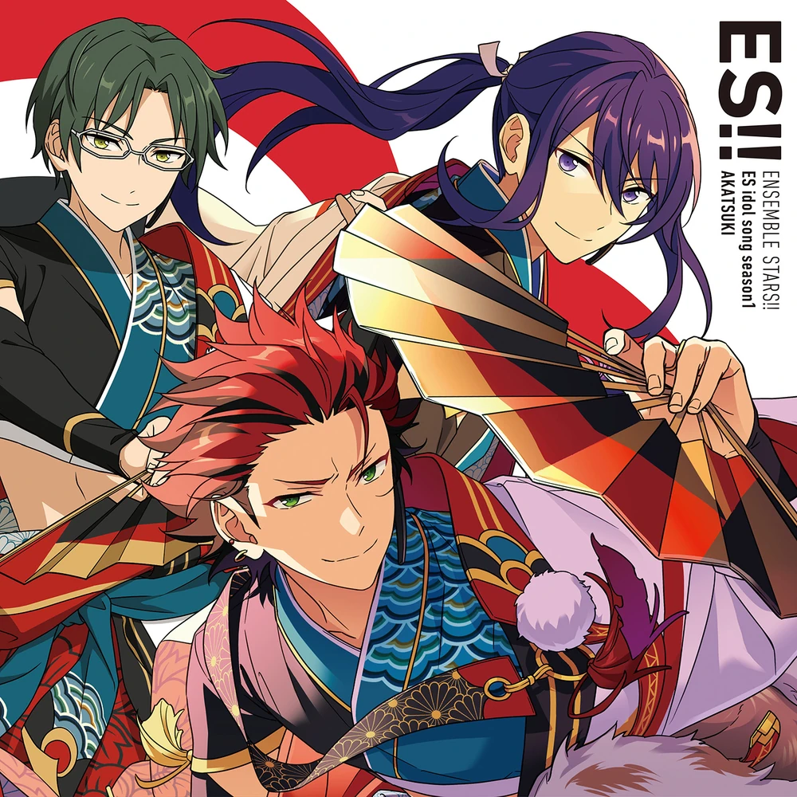
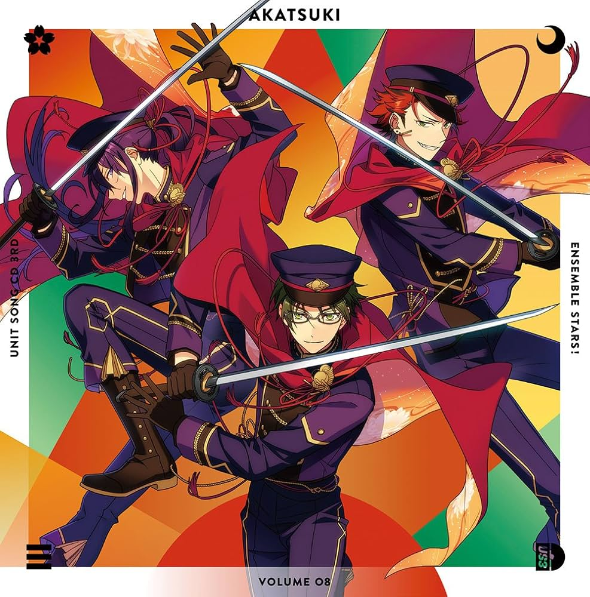
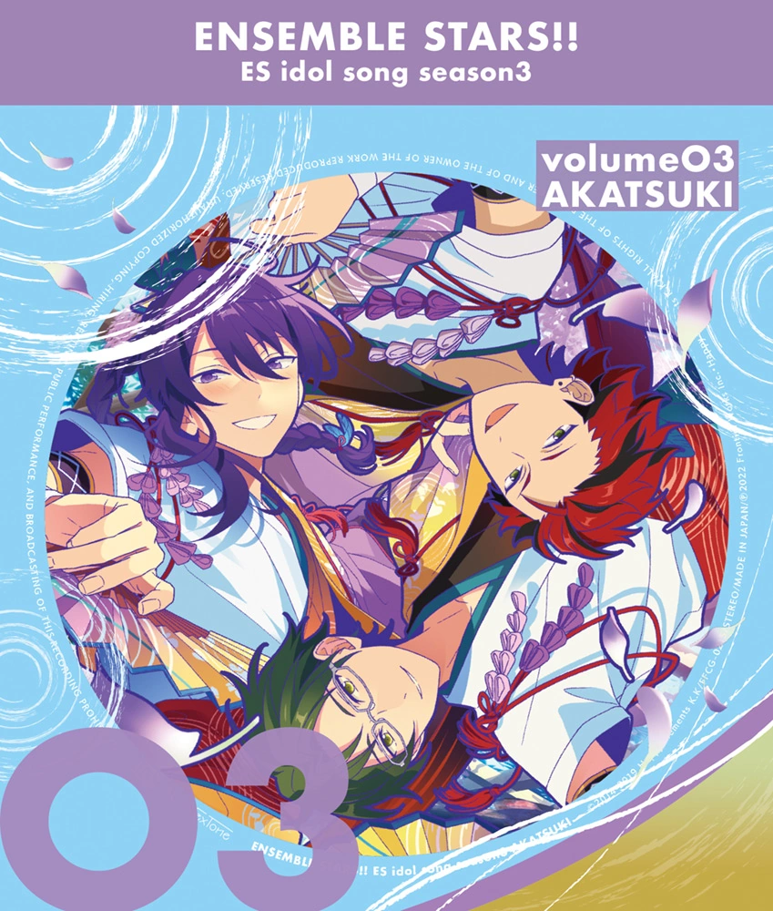
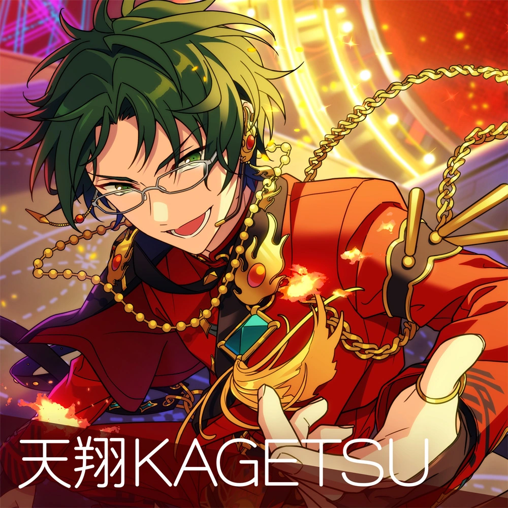
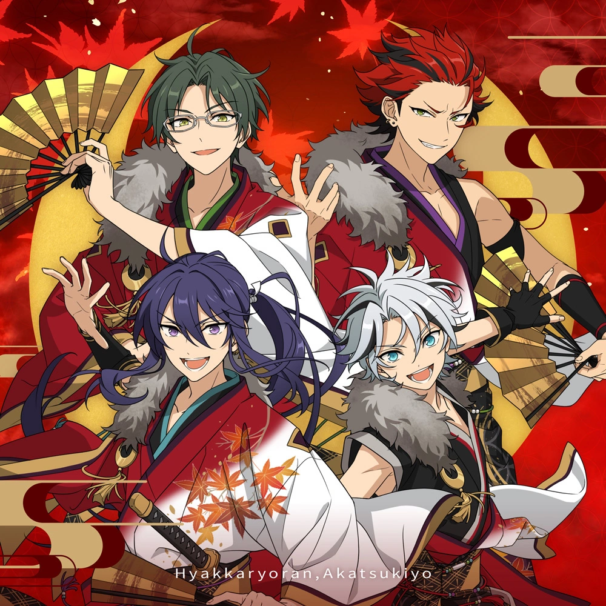

Bright Live Up! Campaign

This 10th Anniversary Campaign features in-character commentary about unit discography.
Ibuki's entrance into AKATSUKI has insensitive parallels to the history between Japan and the Ryukyu Islands, specifically the annexation of Ryukyu into Okinawa from 1872-1879 onward. Click for more information
AKATSUKI is a unit embodied by 和 (wa, lit. harmony, but also a self-designator for Japan). The word 和風 (wafu, Japanese style) comes from 和. During the Meiji Restoration, 和 was central to Japan’s efforts to unify and assimilate new territories under a shared cultural identity. On top of his membership, Ibuki's active pursuit of 本当の和風 (true Japanese-style) being the reason he pursues AKATSUKI is inappropriate, bearing this in mind.
Additionally, the Ryukyu Disposition was driven by military interests, particularly securing Japan's southern borders from other nations. In Okinawan schools, national pride was linked to serving Japan’s military goals. This had devastating consequences, particularly during the Battle of Okinawa in World War II. This in mind, having Ibuki join the self-proclaimed "war unit" is also inappropriate.
Read the full-length analysis here: Unpacking Shinsei (新生) AKATSUKI; An Extended Translation Note and Analysis.
| Song | Commentary |
|---|---|
| Gekkou Kitan (2022)  | People tend to ask me why I take off my glasses for this song... someday, I'll give that story the telling it deserves. |
| Konjiki Senya Yumebutai (2024)  | I think it's a song that gives off the feeling of a beautiful, splendid history, fiiting for "Rumbling Heaven and Earth R".1 Enjoy yourself and take a listen. |
| Akatsuki Iroha Uta (2021)  | Even when the wind blows against us, it's just like us to struggle and trudge our way back up. I'd say this song is packed tight with that kind of spirit. |
| Kengeki no Mai (2017)  | It's an impressive piece that incorporates sword dance. I had a lotta trouble with it durin' practice, but... I ended up getting it down some way or another, didn't I? |
| Summer Bird (2022)  | When I sing this song, it makes me feel like I've come home. It leads one into a bright future, taking off into the bright, blue sky. And isn't that what we are all about? |
| Matsuriyo Emaki (2017) | On festival nights, I would always get swept up in the excitement. I remember buying far too many things from the food stalls a long, long time ago. |
| Tenshou KAGETSU (2024)  | Nyahaha, never did I think I'd get to be a member of AKATSUKI. Back then, the thought hadn't even crossed my mind~? |
| Hyakkaryoran Akatsukiyo (2025 vers.)  | From up on stage, I'd seen an entire sea of lights, all kinds of colors... To me, the sight was absolutely unforgettable. It's destiny~ |
Translation Notes
- ↑ Referencing Heaven and Earth, AKATSUKI's climax story, where they revive a radio show called Rumbling Heaven and Earth into Rumbling Heaven and Earth R.